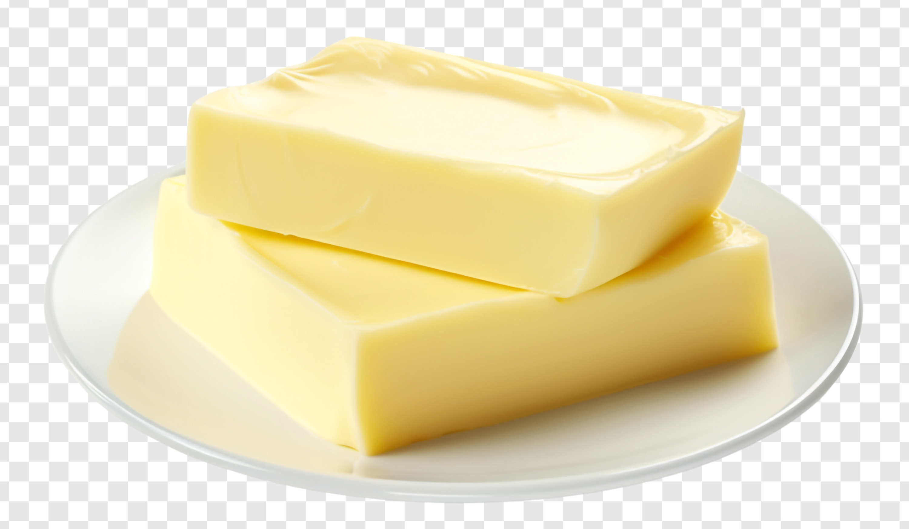
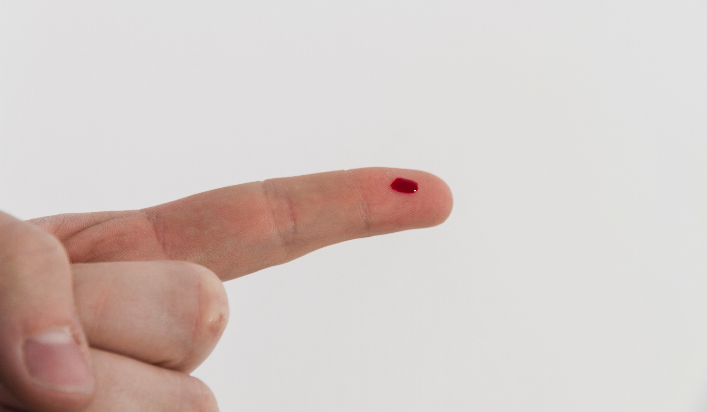
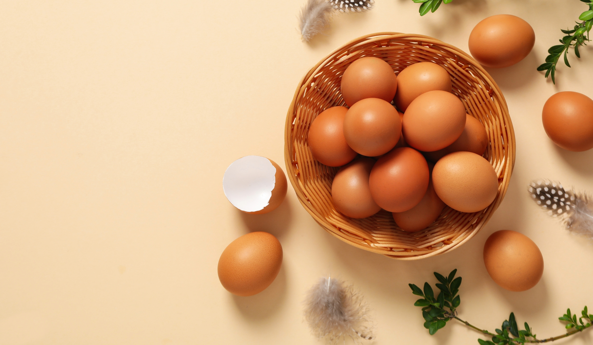
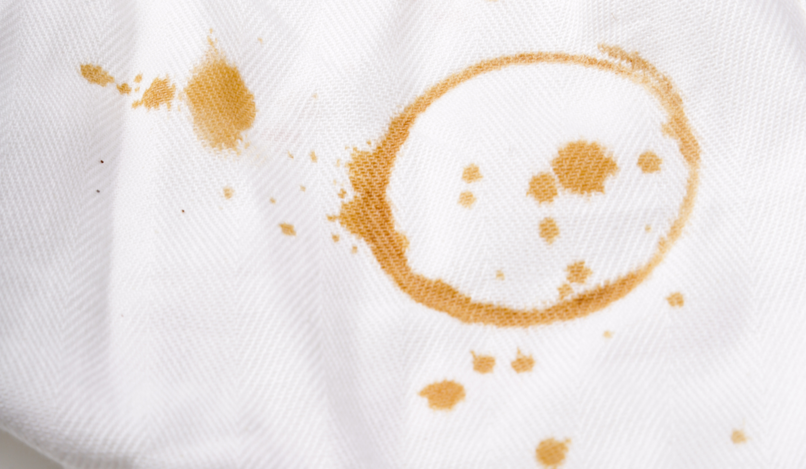
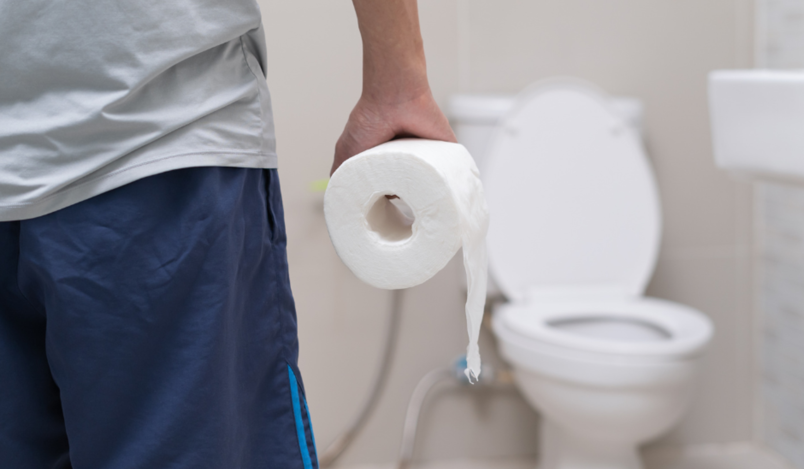
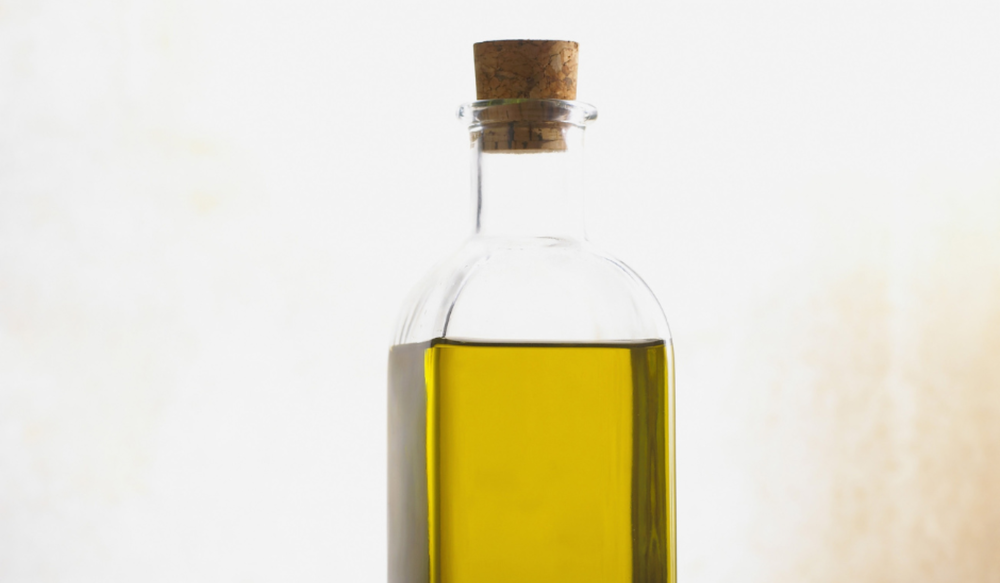
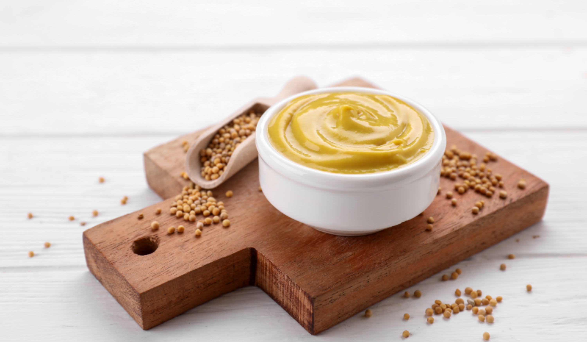
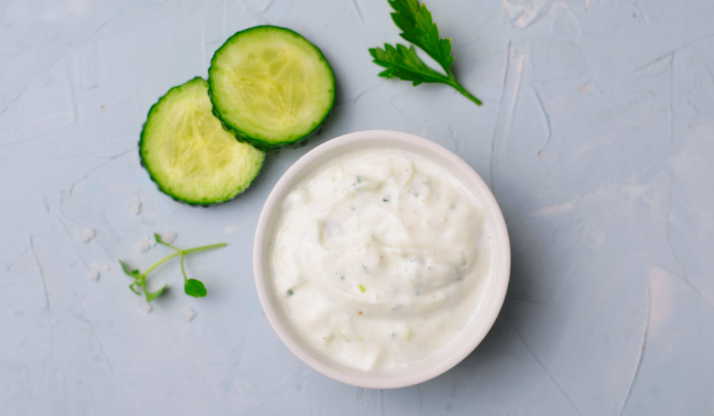

TOMATO SAUCE
TOMATO SAUCE
Remove excess sauce with water, then immediately pour Marseilles soap or a few drops of liquid dish soap onto it and leave it to act for a few minutes. If the stain has dried out, rub it with a mixture of water, baking soda and salt, then wash in the washing machine.
COFFEE

BUTTER
WINE

TEA
TEA
Tea may be removed with vinegar and lemon juice, which should be left on the stain for approximately one hour, after which the garment should be washed normally.
GREASE

BLOOD

EGG

OILY
INK

CHOCOLATE
CHOCOLATE
To remove chocolate, apply a mixture of water and soap powder, leave for half an hour and then wash the garment in the washing machine.

SWEAT
SWEAT
Pre-treat the stain with liquid detergent and baking soda, and rub vigorously.

ALCOHOLIC DRINK
ALCOHOLIC DRINK
Dab the stain with an absorbent cloth and rinse. Treat coloured stains with a stain remover gel or a powder solvent, dissolved in a small amount of water. Then wash according to the laundry label on the garment.

FRUIT
FRUIT
Use cold water and liquid soap applied directly to the stain. Leave to act for about half an hour and then machine-wash in the usual way.

LIPSTIC
LIPSTIC
Pour a few drops of alcohol onto a cotton wool ball and press it down hard on the stain, without rubbing.
WAX

ICE CREAM
ICE CREAM
While the stain is still fresh, use a small piece of Marseille soap. If the stain has dried, soften it with water and laundry soap.

GLUE
GLUE
Cover the stain with Marseille soap, without rubbing, and leave it to soak in cold water, then wash in the washing machine.

FRUIT JUICE
FRUIT JUICE
Try rubbing lemon juice onto the stain, or a mixture of sparkling water and white wine vinegar. If the stain is dry, it is advisable to use liquid soap, which should be left to act for approximately twenty minutes, then rinsed with lukewarm water and finally washed in the washing machine as usual.

URINE

GRASS
GRASS
Grass stains should be blotted with white wine vinegar, left for approximately one hour and then washed in the washing machine.

FELT TIP PEN
FELT TIP PEN
Dissolve a little starch in cold water, blot the stain with the solution, leave it to dry, and then brush it well to remove any residues before washing the garment in the washing machine.

OILY
LIQUEUR

MAKE UP
MAKE UP
Stains caused by makeup in powder form should be brushed off. For liquid makeup, dab carefully with an absorbent pad. Use a non-oil-based makeup remover if stains are difficult to remove. Rinse, then wash with powdered detergent according to the laundry label.

BEETROOT JUICE
MAKE UP
Rinse the stain with cold water. If the stain is already dry, soak the garment for at least an hour in warm water with powder detergent, then proceed to wash in the washing machine.

MUSTARD

MAYONNAISE
MASCARA

CUFF SOIL
CUFF SOIL
Pour on the stain a small amount of gel stain remover and rub. Leave it for an hour, then wash with powdered detergent according to the laundry label on the garment.

DEODORANT
DEODORANTL
Rub the stain with liquid detergent. If the stain is difficult to remove, use a powdered detergent, then wash the garment in the machine according to the instructions on the laundry label.

SHOE POLISH
SHOE POLISH
Pour stain remover gel, or detergent, onto the stain and rub it in. Let it soak for an hour in hot water. Then wash at the hottest temperature permitted by the laundry label.

PERFUME
PERFUME
If you have accidentally sprayed perfume over clothing and halos have formed, you can easily remedy this by rubbing the stain with a little Marseille soap. Immediately afterwards, proceed to wash it as usual, either by hand or in the washing machine.

CURRY
CURRY
First rinse in warm water, then dab the stain with spirit or a liquor distilled from wine. For delicate fabrics such as wool or silk, simply dab the stain and then wash as usual.

NAIL VARNISH
NAIL VARNISH
Place a cloth under the dirty side and pat the stain with non-oily nail polish remover, diluted with water. If the stain persists, add a little rubbing alcohol.

CLAY
CLAY
To remove clay stains from clothes, it is advisable to use a solution of 1 spoonful of ammonia and 10 drops of water. Moisten a cotton ball with the solution and dab it on the stain until the clay completely disappears. Rinse with running water to remove the smell of ammonia.